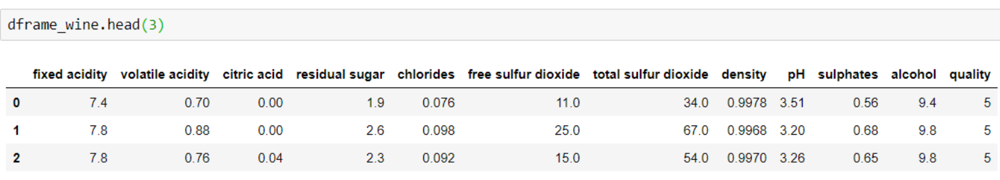

Red wine
With this dataset I was able to analyse the
different properties of the red wine in the market.

The data for this project were taken from Kaggle and can be downloaded directly from here.
Data Preview


Observations
- The dataset contains 1599 rows
- The dataset contains 12 columns
- There are no NaN values
Data Dictionary
| Variable | Definition |
|---|---|
| fixed acidity | most acids involved with wine (do not evaporate readily) |
| volatile acidity | the amount of acetic acid in wine, which at too high of levels can lead to an unpleasant, vinegar taste |
| citric acid | found in small quantities, citric acid can add 'freshness' and flavor to wines |
| residual sugar | the amount of sugar remaining after fermentation stops |
| chlorides | the amount of salt in the wine |
| free sulfur dioxide | the free form of SO2, it prevents microbial growth and the oxidation of wine |
| total sulfur dioxide | amount of free and bound forms of S02; evident in the nose and taste of wine |
| density | the density of water is close to that of water depending on the percent alcohol and sugar content |
| pH | describes how acidic or basic a wine is on a scale from 0 (very acidic) to 14 (very basic) |
| sulphates | a wine additive which can contribute to sulfur dioxide gas (S02) levels, wich acts as an antimicrobial and antioxidant |
| alcohol | the percent of alcohol content of the wine |
| quality | output variable (based on sensory data, scored between 0 and 10) |
Quality distribution
Here I have categorised the products by quality.Observations
- As can be seen from the bar chart the quality of most wines sits between a rank of 5 and 7
Heatmap
Using the heatmap function I was able to visualise how the parameters are connected to each other. The red colour and its shades represent values that are highly correlated to each other, by contrary, the blue colour and its shades indicate parameters that do not influence each other. Any value with a white colour is neutral.Quality of wines based on their characteristics
Conclusion
With this study I was able to establish that, on average, higher quality wines have:- a higher alcohol content
- a lower volatile acidity
- a slightly lower pH
- a slightly lower density
Back to Home